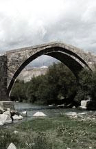
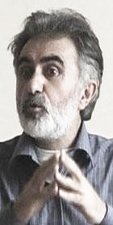
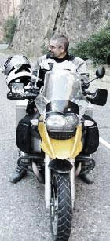
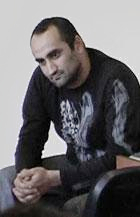
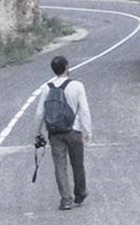

NOWADAYS THE BRIDGE ONLY DECORATES THE SCENERY

Based on the official statistics, there are around 8000 people that reside in Yeghegnadzor. However the unofficial statistics, as in other Armenian cities, indicate a smaller number – people are leaving abroad to find jobs.
Maybe those who live in that small city are happy-go-lucky people who aren’t very interested in politics. We were able to locate only one newspaper stand in Yeghegnadzor, which was closed most of the time. In other places the press was not being sold whatsoever.
Besides that, we were told that a special antenna has been placed in the city that blocks Radio Freedom and other “imperialistic voices”.
The variety of small clothing stores is simply stunning. There are probably more of them then produce stores downtown of the city. But generally Yeghegnadzor leaves a very cozy impression; it’s a clean city with lots of greens. The streets are full of young people, because there is a university where the students are from all over Armenia.
Due to its small size the city is completely supplied with public transport, and there are cab service offices on almost every corner.
There is a wonderful reserve next to Yeghegnadzor, and the local residents told us that the entrance is strictly forbidden to the locals.
«Can you imagine it, we can not be seen in our own reserve», - they complained. «That’s probably why it is a reserve, to keep away people from that territory», - I gave excuses on behalf of the local authorities. «Well, yes», - they answered. – There aren’t any people there. However Serge Sargisyan and Robert Kocharyan hunt there all the time and they always take foreign guests hunting. There practically aren’t any moufflons left – shot all of them!» I couldn’t argue against that.
The Vayots Dzor region where Yeghegnadzor is located is rich with all types of historical monuments. We were shown the so-called “Sharp Bridge” through which the Silk Road passed a long time ago. Caravans with expensive gifts from different countries would pass through it on the way from east to west, and on the way back. Nowadays you can see Iranian trailers on the nearby highways most of which were made in the middle of the last century, and the bridge only decorates the scenery.
We also had the time to visit the old church complex in Noravank. The quantity of tourists with photo and video cameras spoke of the popularity of this route.
But the road to Noravank mostly impressed me. The asphalted highway swerves through a deep canyon that has been created by the flow of a small river. On both sides there are mountain cliffs like multicolored pyramids, and if you look closer you can see spectacular base – relieves that were carved by the wind, the rain and the sun. There stands a proud Egyptian who is leaning on a staff, and just around the corner there is a gnome with a pointy cap who says farewell to the curious tourists with the look on his face.
Too bad there wasn’t enough time for hiking through the region.
Maybe those who live in that small city are happy-go-lucky people who aren’t very interested in politics. We were able to locate only one newspaper stand in Yeghegnadzor, which was closed most of the time. In other places the press was not being sold whatsoever.
Besides that, we were told that a special antenna has been placed in the city that blocks Radio Freedom and other “imperialistic voices”.
The variety of small clothing stores is simply stunning. There are probably more of them then produce stores downtown of the city. But generally Yeghegnadzor leaves a very cozy impression; it’s a clean city with lots of greens. The streets are full of young people, because there is a university where the students are from all over Armenia.
Due to its small size the city is completely supplied with public transport, and there are cab service offices on almost every corner.
There is a wonderful reserve next to Yeghegnadzor, and the local residents told us that the entrance is strictly forbidden to the locals.
«Can you imagine it, we can not be seen in our own reserve», - they complained. «That’s probably why it is a reserve, to keep away people from that territory», - I gave excuses on behalf of the local authorities. «Well, yes», - they answered. – There aren’t any people there. However Serge Sargisyan and Robert Kocharyan hunt there all the time and they always take foreign guests hunting. There practically aren’t any moufflons left – shot all of them!» I couldn’t argue against that.
The Vayots Dzor region where Yeghegnadzor is located is rich with all types of historical monuments. We were shown the so-called “Sharp Bridge” through which the Silk Road passed a long time ago. Caravans with expensive gifts from different countries would pass through it on the way from east to west, and on the way back. Nowadays you can see Iranian trailers on the nearby highways most of which were made in the middle of the last century, and the bridge only decorates the scenery.
We also had the time to visit the old church complex in Noravank. The quantity of tourists with photo and video cameras spoke of the popularity of this route.
But the road to Noravank mostly impressed me. The asphalted highway swerves through a deep canyon that has been created by the flow of a small river. On both sides there are mountain cliffs like multicolored pyramids, and if you look closer you can see spectacular base – relieves that were carved by the wind, the rain and the sun. There stands a proud Egyptian who is leaning on a staff, and just around the corner there is a gnome with a pointy cap who says farewell to the curious tourists with the look on his face.
Too bad there wasn’t enough time for hiking through the region.
GRANDMA GAYANE
One of the days we were invited to a local family’s house as guests. An amazingly energetic old lady met us, 83 years old as we found out later.
Grandma Gayane, as they called her, told us about Nakhichevan or as she called it “Vatan” (which means Fatherland when translated from Azerbaijanian). She recited poems out loud about her beloved “Vatan” in Azerbaijanian. She spoke simultaneously in three languages, Armenian, Azerbaijani and Russian, when she told us about her wonderful Fatherland - Nakhichevan.
Later we drank tea. During the tea drinking, Grandma Gayane told us that “of ours, in Nakhichevan” usually the tea is being drank from small bubble bellied glass cups while biting a piece of sugar or eating preserves or honey with it, “Drinking tea from those specific cups, makes the taste especially aromatic” - she assured us.
Grandma Gayane, as they called her, told us about Nakhichevan or as she called it “Vatan” (which means Fatherland when translated from Azerbaijanian). She recited poems out loud about her beloved “Vatan” in Azerbaijanian. She spoke simultaneously in three languages, Armenian, Azerbaijani and Russian, when she told us about her wonderful Fatherland - Nakhichevan.
Later we drank tea. During the tea drinking, Grandma Gayane told us that “of ours, in Nakhichevan” usually the tea is being drank from small bubble bellied glass cups while biting a piece of sugar or eating preserves or honey with it, “Drinking tea from those specific cups, makes the taste especially aromatic” - she assured us.
THE PHOTOGRAPHER EDWARD

Edward Asatryan - an experienced Photographer. His small photo shop is like a frozen exposure out of childhood. It’s as if you’re waiting for the photographer to throw his magic black cape over his wonder machine on a tripod… and you are waiting in anticipation for the “birdie” to fly out of it.
Only the computer and the printer return you to reality of the modern world. “This is where I work” - smiles Edward. Later we observe his photos, mt. Ararat in heavy clouds - the land is nowhere to be seen, it’s as if the mountaintop is floating in the air. Or - boiling waves of an ocean around a lonesome island, maybe it’s the great world flood and the island is the mountaintop of Ararat and the photo was taken from Noah’s ark… A photo of an old church with the carving of an asymmetrical cross on the wall, if you look from a certain angle, the asymmetry disappears and the cross straightens his broken beams.
Edward virtually has no clients and there is no profit from the studio. Based on his words the local authorities are warning the local residents not to use the services of the studio. And everything started March 1st of this year.
Edward participated in the demonstration of the opposition that day in Yerevan. During the break up of the demonstration he was arrested. He was brutally beaten and his shoulder was damaged. As a result he underwent several serious operations, but his arm still doesn’t work very well.
The criminal case against Edward has not been closed. He is accused of not cooperating with the authorities and showing resistance, and anti government propaganda, converting others into the opposition promising them American currency among many other things.
«You are on the side of the opposition, do you think that if the opposition comes to power, it will be able to make changes in the situation of the country from the very roots?» - I asked.
«I simply love freedom and have always been free» - he answers. – "I am not acting for some leader, be it Levon Ter – Petrosyan or someone else, to come to power. People today need freedom, and the cynicism of the authorities pushes people to join the opposition. We need to overcome the fear, like we did in 1988 even though the KGB’s tactics were very harsh back then. I believe the X hour will happen in Armenia".
And his answer to the question weather he is prepared to take part in future political actions of the opposition, Edward repeated: "I simply love freedom very much…"
Only the computer and the printer return you to reality of the modern world. “This is where I work” - smiles Edward. Later we observe his photos, mt. Ararat in heavy clouds - the land is nowhere to be seen, it’s as if the mountaintop is floating in the air. Or - boiling waves of an ocean around a lonesome island, maybe it’s the great world flood and the island is the mountaintop of Ararat and the photo was taken from Noah’s ark… A photo of an old church with the carving of an asymmetrical cross on the wall, if you look from a certain angle, the asymmetry disappears and the cross straightens his broken beams.
Edward virtually has no clients and there is no profit from the studio. Based on his words the local authorities are warning the local residents not to use the services of the studio. And everything started March 1st of this year.
Edward participated in the demonstration of the opposition that day in Yerevan. During the break up of the demonstration he was arrested. He was brutally beaten and his shoulder was damaged. As a result he underwent several serious operations, but his arm still doesn’t work very well.
The criminal case against Edward has not been closed. He is accused of not cooperating with the authorities and showing resistance, and anti government propaganda, converting others into the opposition promising them American currency among many other things.
«You are on the side of the opposition, do you think that if the opposition comes to power, it will be able to make changes in the situation of the country from the very roots?» - I asked.
«I simply love freedom and have always been free» - he answers. – "I am not acting for some leader, be it Levon Ter – Petrosyan or someone else, to come to power. People today need freedom, and the cynicism of the authorities pushes people to join the opposition. We need to overcome the fear, like we did in 1988 even though the KGB’s tactics were very harsh back then. I believe the X hour will happen in Armenia".
And his answer to the question weather he is prepared to take part in future political actions of the opposition, Edward repeated: "I simply love freedom very much…"
ONCE AGAIN ABOUT THE KNIGHTS OF THE CAPE
AND THE DAGGER

This is a Knight… but without the cape and the dagger. Ugo from Norway.
Just as in Vanadzor the local knights of the cape and the dagger visited the festival. And again we were informed about it by whispers in our ears. Of course the local “special services” didn’t try to make contact with us but on the last day they actively participated in the discussions.
One of the two knights, in a black leather trench coat attempted to put all the dots above all the “i”s.
«I actually don’t understand, what exactly are you doing here?! If you are here to collect the opinions of the local population, then there is no need to do that. But if you are here to socialize then go right ahead», - he announced. It seemed to me that he controlled the urge within himself to check the documents of everyone who was present.
After those words the Knight let out a deep breath, thought for a minute, then continued. “ Here you are discussing a film about Chechnya, I have this to say, Russians must be made to respect Caucasians! So that those…”
Then he paused in confusion for a second trying to remember the needed word. And with gestures showed the audience the shaving of the head. “Skinheads!” – someone hinted from the audience.
«Ah yes that’s right! Skinheads! So that they wouldn’t kill the people from the Caucasus or any other “blacks”, - he concluded. After pushing that speech, and standing for another 15 minutes, the knight in the black cape left the audience. Perhaps he thought that his duty as a knight was done, or perhaps he went to report to those who he is subordinate to.
Knight N2, a young man dressed all in black also decides to express his opinion: «The film about Chechnya was a propaganda». Threw a look into the silenced audience with significance, and continued: «As I understood the film was against Putin... That also means that it’s against Russia. When we say Putin we actually mean Russia and vice – versa».
The film was about the victims of the Chechenian war and I felt sorry for Russia…
One of the two knights, in a black leather trench coat attempted to put all the dots above all the “i”s.
«I actually don’t understand, what exactly are you doing here?! If you are here to collect the opinions of the local population, then there is no need to do that. But if you are here to socialize then go right ahead», - he announced. It seemed to me that he controlled the urge within himself to check the documents of everyone who was present.
After those words the Knight let out a deep breath, thought for a minute, then continued. “ Here you are discussing a film about Chechnya, I have this to say, Russians must be made to respect Caucasians! So that those…”
Then he paused in confusion for a second trying to remember the needed word. And with gestures showed the audience the shaving of the head. “Skinheads!” – someone hinted from the audience.
«Ah yes that’s right! Skinheads! So that they wouldn’t kill the people from the Caucasus or any other “blacks”, - he concluded. After pushing that speech, and standing for another 15 minutes, the knight in the black cape left the audience. Perhaps he thought that his duty as a knight was done, or perhaps he went to report to those who he is subordinate to.
Knight N2, a young man dressed all in black also decides to express his opinion: «The film about Chechnya was a propaganda». Threw a look into the silenced audience with significance, and continued: «As I understood the film was against Putin... That also means that it’s against Russia. When we say Putin we actually mean Russia and vice – versa».
The film was about the victims of the Chechenian war and I felt sorry for Russia…
FESTIVAL

The local organizer of the festival, Nane Bagratuni, quickly found a common language with the audience. The discussions continued very actively during intermissions between films.
But what can I say, about after film discussions, in the fifth city on the count? Just as in the other cities the main participants was the youth. Extreme radical opinions alternated to calls for peace and friendship.
After viewing the film about the Chechenian war, many of them confessed that they never imagined what the atrocities would be like in that war. They confessed that the local mass media practically don’t say anything about the war in Chechnya and Northern Caucasus.
Just as anywhere else before that, the film about the common Jewish - Arabic school brought up the loudest discussion. The opinion of a young female student Karina was that adults in Armenian communities are more in need of enlightenment and correction of their opinions and views, because the children are more tolerant then adults.
A 45 year old man agreed with her: «I was shocked by that film, I don’t know if we will be able to achieve peace with football matches, but the fact is, that we need to make changes in the educational system. And we need schools for adults also».
Generally I came to one simple as an ameba truth, after all the discussions that went on for close to a month. We all need a school for the defective. We need to learn something that we missed many years ago, before the case gets to chamber N6. It will be too late then to learn anything and I doubt the medical treatment will bring any good results at that time.
A lot has changed in South Caucasus during the last few months. And it’s not likely for anything to be the same as it once was.
But what can I say, about after film discussions, in the fifth city on the count? Just as in the other cities the main participants was the youth. Extreme radical opinions alternated to calls for peace and friendship.
After viewing the film about the Chechenian war, many of them confessed that they never imagined what the atrocities would be like in that war. They confessed that the local mass media practically don’t say anything about the war in Chechnya and Northern Caucasus.
Just as anywhere else before that, the film about the common Jewish - Arabic school brought up the loudest discussion. The opinion of a young female student Karina was that adults in Armenian communities are more in need of enlightenment and correction of their opinions and views, because the children are more tolerant then adults.
A 45 year old man agreed with her: «I was shocked by that film, I don’t know if we will be able to achieve peace with football matches, but the fact is, that we need to make changes in the educational system. And we need schools for adults also».
Generally I came to one simple as an ameba truth, after all the discussions that went on for close to a month. We all need a school for the defective. We need to learn something that we missed many years ago, before the case gets to chamber N6. It will be too late then to learn anything and I doubt the medical treatment will bring any good results at that time.
A lot has changed in South Caucasus during the last few months. And it’s not likely for anything to be the same as it once was.
THE END

The festival in Armenia came to a conclusion, the next and the last stop of 2008 - Nagorno Karabagh.
Will a yellow van with the sign “Nationality - Human” written in Abkhazian, Azerbaijanian, Armenian, Georgian, Ossetian, Russian and English cruise through the countries of South Caucasus next year no one knows. The international jury will decide the fate of the Festival.
Ilya Chavchavadze a Georgian writer has a parable “Is he a human?” The festival insisted that “Nationality - Human”. But perhaps there really is a question mark missing in the title …
Irakli Chikhladze
September 2008
Eghegnadzor, Armenia
Published: 27-04-09
This article is made during the South Caucasus Film Festival of Peace and Human Rights in Armenia implemented by Caucasus Center of Peace-Making Initiative by support of the Eurasia
Partnership Foundation
and the American People through
the United States Agency
for International Development (USAID)
Will a yellow van with the sign “Nationality - Human” written in Abkhazian, Azerbaijanian, Armenian, Georgian, Ossetian, Russian and English cruise through the countries of South Caucasus next year no one knows. The international jury will decide the fate of the Festival.
Ilya Chavchavadze a Georgian writer has a parable “Is he a human?” The festival insisted that “Nationality - Human”. But perhaps there really is a question mark missing in the title …
Irakli Chikhladze
September 2008
Eghegnadzor, Armenia
Published: 27-04-09